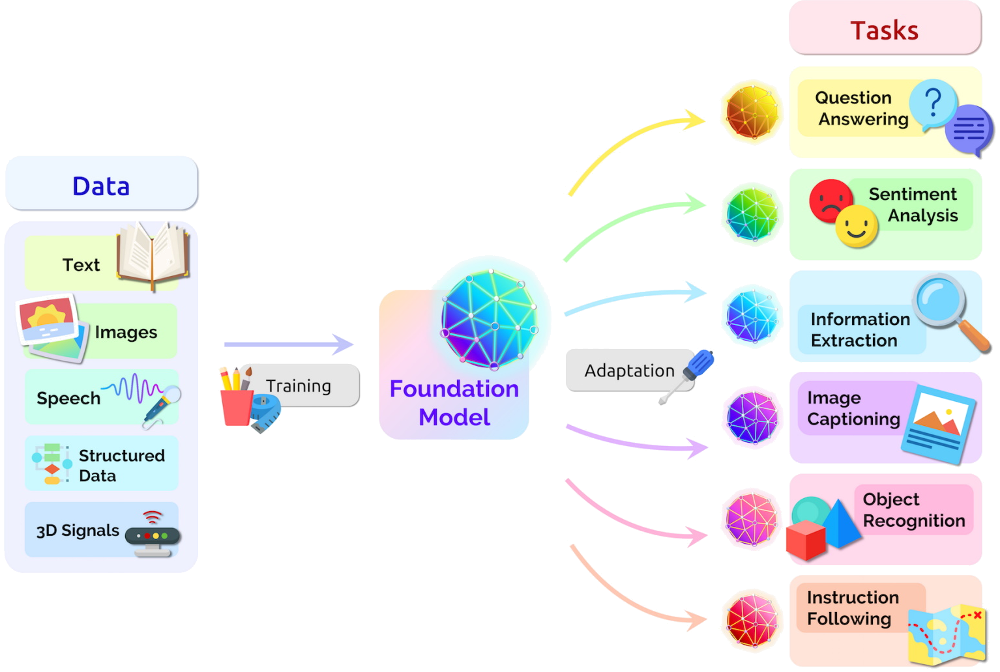
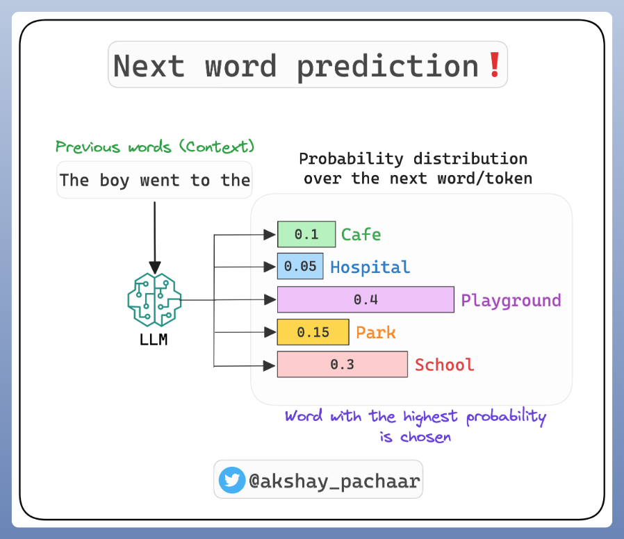
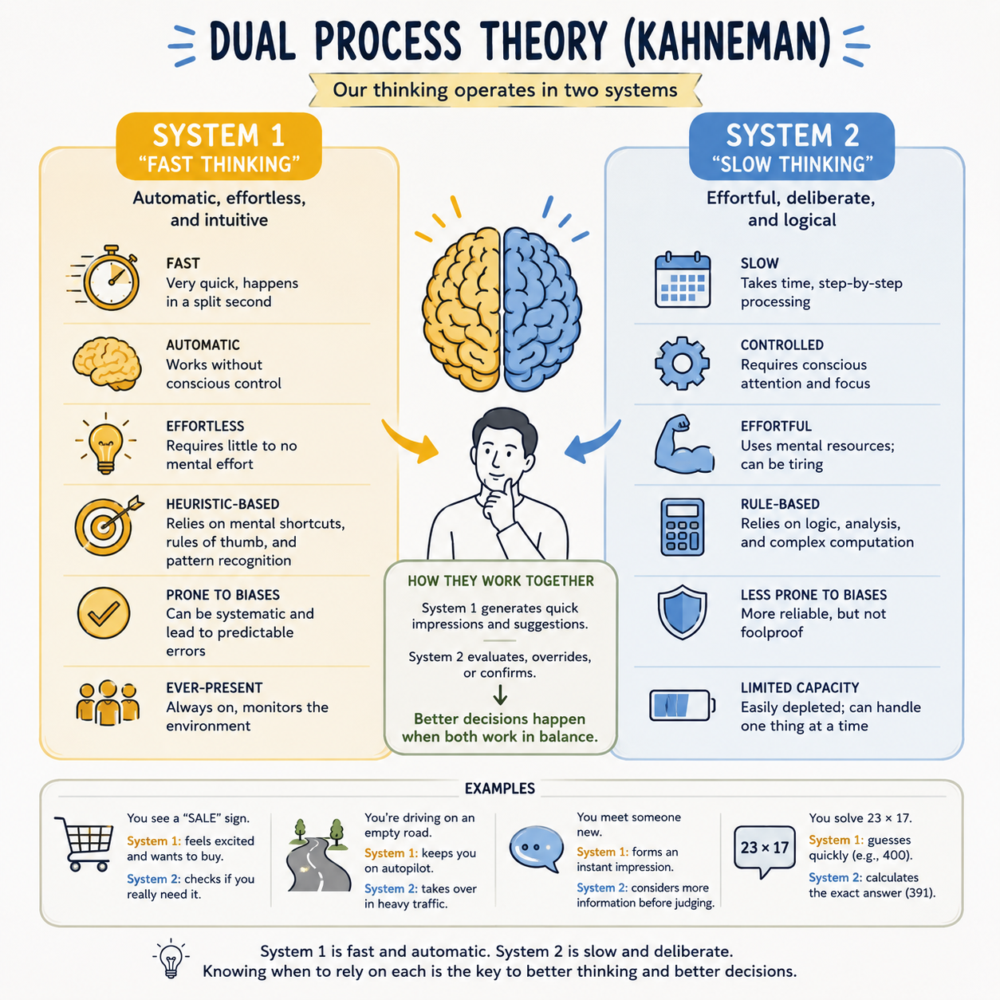
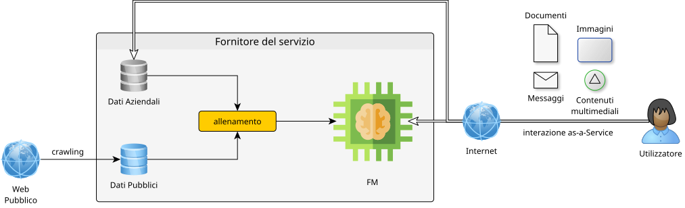
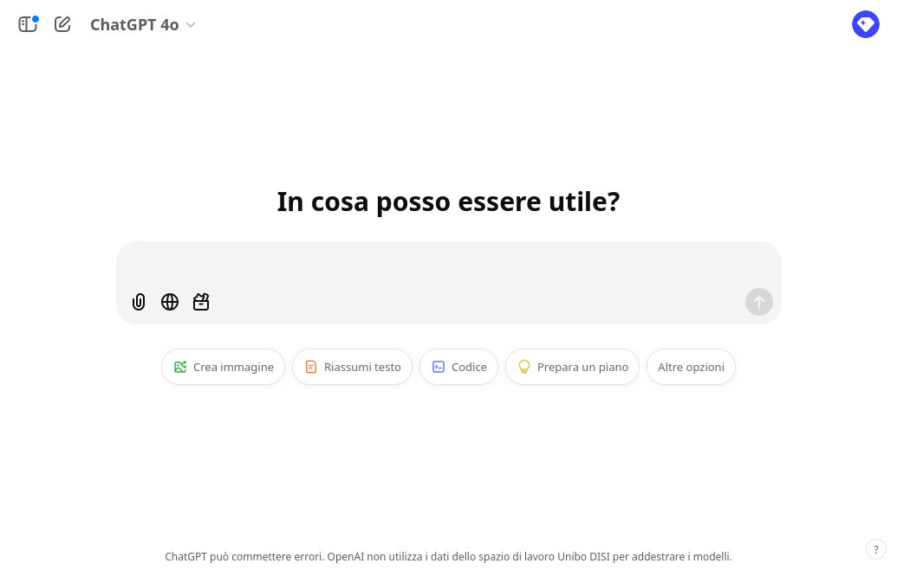
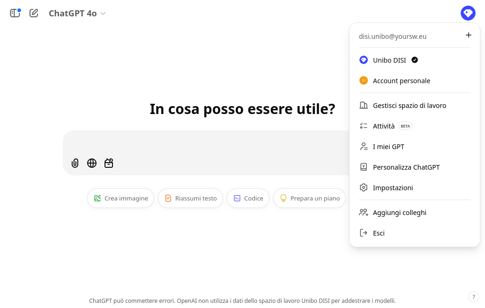

Generative AI 101
Intelligent Systems Engineering — Module 2
A.Y. 2025/2026
Giovanni Ciatto
Compiled on: 2026-05-20 — printable version
GenAI: Generative Artificial Intelligence
AI algorithms capable of automatically generating content, e.g.:
- text
- images
- audio and/or video
- [source] code
- …
GenAI through Foundation Models (FM)
- Large neural networks that learn to process, “understand”, and produce [not necessarily] structured and unstructured data
- trained on large amounts of data, and with large computational resources, to do a bit of everything
- with the idea that they can later be specialized for specific tasks

Terminology: Foundation Models vs. Large Language Models

Basic Operation of LLMs

- LLMs have learned to predict the next word in a text given the previous context
- similar to the predictive keyboard on mobile phones, but much more complex and powerful
- In other words, LLMs have learned how to use natural language
- Foundation models can combine input/output text with other modalities (e.g. images, audio, video)
- e.g. accepting text + image as input, and producing text + image as output, or any combination of these modalities
- This makes them very good at dealing with unstructured data, either in input or output
Language and Reasoning
-
Natural language helps people communicate
-
It can be used to express complex or abstract concepts
-
It can be used to reason about problems and solutions
- however it admits imprecisions, due to ambiguity, variable interpretations, subjectivity, etc.
Natural language allows LLMs to use intuition in reasoning, like humans do
(thus making mistakes like humans do)
-
$\implies$ LLMs can be very confident in themselves, while saying incorrect, imprecise, or made-up things
-
better would be to combine LLMs with symbolic AI tools, to get the best of both worlds
Analogy with Dual-system theory

(cf. Thinking, Fast and Slow)
GenAI with an as-a-Service consumption model

GenAI with an as-a-Service consumption model
-
Cost models:
- subscription-based: you pay a fixed monthly/annual fee to access the service
- it often still includes usage limits
- usage-based: you pay in proportion to the actual use of the service
- subscription-based: you pay a fixed monthly/annual fee to access the service
-
Consumption is measured based on the computational effort required to serve the request:
- processed tokens (for text)
- number of requests made per unit of time (minute, hour, day, month)
- size of the processed data (for images, audio, video)
- complexity of the specific model used to serve the request
-
Generation should be considered a stochastic process by construction
- The quality of the service is subject to randomness and fluctuations due to:
- service load
- model choice, and its related updates
- service limits possibly reached in the current time window
- chance
GenAI learning cycle

GenAI learning cycle — Consequences (pt. 1)
-
Sampling bias: GenAI knows only what it has been trained on + the pious hope that it learns to generalize
-
Learning uses data taken from the Web + possible provider-owned company data
- there is documented use of previous users’ interactions as feedback for subsequent training
- Niche information may not be learned correctly (or at all)
- It is essential to avoid sharing sensitive, confidential, or copyrighted information
GenAI learning cycle — Consequences (pt. 2)
-
Learning cycles are extremely expensive in terms of money and computational resources…
-
… performed periodically (weeks? months?) to improve the quality of the service
- the as-a-Service consumption model gives the user transparent access to the updated service
- Recent information may not have been learned yet
- There is a risk of receiving outdated or incomplete answers from GenAI
- GenAI gives the impression of learning during the conversation, but it actually does so offline
Some technological solutions let you choose (pt. 1)

Some technological solutions let you choose (pt. 2)

Some technological solutions let you choose (pt. 3)

Some technological solutions let you choose (pt. 4)

Main technological solutions
Categorized by type of interface
- Conversational: e.g. ChatGPT, Claude, Scite
- Auto-completion: e.g. GitHub Copilot
- Programmatic: e.g. OpenAI Platform, Hugging Face
- In-App: e.g. Microsoft 365 Copilot
- Audio/video editing: e.g. Suno, Runway
- Inspection of generated material: e.g. GPTZero, ZeroGPT
Non-exhaustive list!
Conversational interface

- Textual interaction that mimics a (chat) exchange
- the user asks, the AI responds reactively
- The interface allows entering a prompt
- optionally including attachments (e.g. images, documents)
- Responses are contextual
- i.e., the conversation history affects future responses
- The response contains text (often formatted)
- optionally: images, URLs, code
Sometimes…
- … before responding, the AI performs a Web search
- important for obtaining up-to-date results
Auto-completion interface

- The AI suggests a completion for the entered text
- e.g., code, text, URLs
- The user accepts (even partially) or ignores the suggestion
- Used especially for programming code
Attention…
- … subscription pricing model (see here)
- … potential leaks of sensitive information
- … non-negligible lock-in risk
Programmatic interface
import asyncio
from openai import AsyncOpenAI
client = AsyncOpenAI(api_key="sk-1234567890abcdef1234567890abcdef")
async def main():
stream = await client.chat.completions.create(
model="gpt-4",
messages=[
dict(role="user",
content="European countries, one by line")
],
stream=True,
)
async for chunk in stream:
print(chunk.choices[0].delta.content or "", end=", ")
asyncio.run(main())
Output:
Albania, Andorra, Austria, Belarus, Belgium, Bosnia and Herzegovina, Bulgaria, Croatia, Cyprus, Czech Republic, Denmark, Estonia, Finland, France, Germany, Greece, Hungary, Iceland, Ireland, Italy, Kosovo, Latvia, Liechtenstein, Lithuania, Luxembourg, Malta, Moldova, Monaco, Montenegro, Netherlands, North Macedonia, Norway, Poland, Portugal, Romania, Russia, San Marino, Serbia, Slovakia, Slovenia, Spain, Sweden, Switzerland, Turkey, Ukraine, United Kingdom, Vatican City (Holy See),
-
Programming language interacting with AI
- e.g., Python, JavaScript
-
The interaction remains of the request-response type
- the program sends a request, the AI responds
Enables
-
Parametric prompts, responses processed automatically
- e.g.
list of LOCALITIES in AREA, one by line- where
LOCALITIES$\in$ {cities,regions,states} - and
AREA$\in$ {Europe,Asia,Africa,America,Oceania} - results sorted alphabetically
- where
- e.g.
-
Writing software that uses AI as a service
- useful in both industry and research
Attention…
- … usage-based pricing model (see here)
- proportional to the number of processed tokens
- prices vary by model
In-app interface

-
GenAI integrated into desktop or web applications
- e.g., Microsoft Office (Word, Excel, Outlook)
-
support for an internal conversational interface
- a conversation that is intrinsically contextualized
-
AI automates complex operations (within the app)
- e.g., draft writing
- e.g., generation of formulas, charts
Attention…
- … subscription pricing model (see here)
- … potential leaks of sensitive information
- … non-negligible lock-in risk
Interface for editing audio/video content (e.g. music)

-
One-shot interaction to generate content
- input: textual description of the content
- output: content
-
The interface then allows
- playback of the content
- editing of the content
- e.g., cutting parts, changing key
Example
Main usage modes
Categorized by GenAI role
GenAI as…
- … a search engine: user is searching for information
- … a (re)writing assistant: user is writing documents
- … a reading assistant: user is extracting information from documents
- … a data-processing assistant: user is processing data
- … a content generator: user is creating content
Non-exhaustive list!
Lecture is Over
Compiled on: 2026-05-20 — printable version